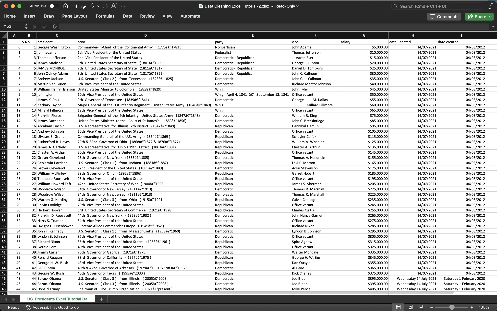
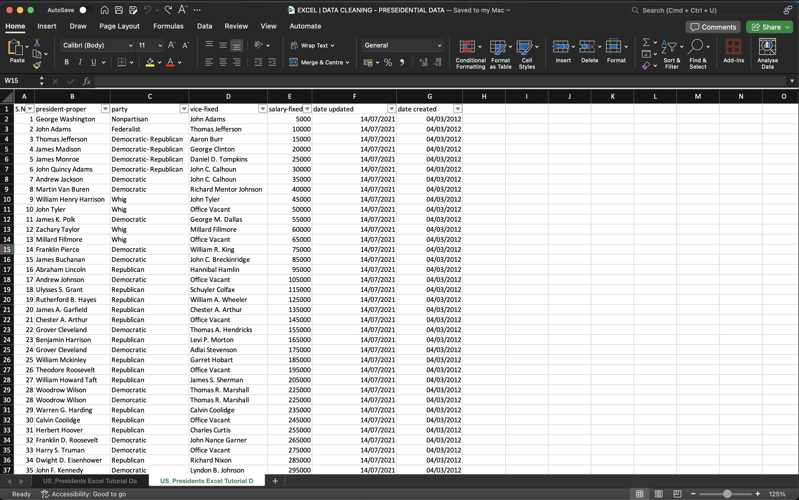

DATA CLEANING -
PRESIDENTIAL DATA
Data Set: Press Here
GitHub File: Press Here
Overview:
This project focuses on cleaning and preparing a fabricated dataset in Excel, involving standardisation, formatting and the removal of unnecessary data. These steps are essential for ensuring that the dataset is well-structured and ready for analysis. The project serves as an introductory project in data cleaning, using various Excel techniques.
Key Skills Used:
• Removing Duplicates
• Text Functions: UPPER, LOWER, PROPER, TRIM
• Filtering and Sorting
• Data Formatting: Number and Date formats
• Data Standardisation
• Data Reduction: Removing unnecessary columns and rows
Dataset Description:
• The dataset includes fake, fabricated data from a fictional context, designed to simulate real-world datasets.
• It contains fields like names, parties, dates, and prices, with typical inconsistencies often found in raw data such as duplicates, incorrect text formatting, and varied date formats.
Why This Project is Worth Doing:
• This project provides an essential introduction to data cleaning, a critical skill for data analysts.
• It showcases real-world Excel functions and techniques used in data preparation.
• Clean and standardised data is necessary for accurate analysis and insights, and this project helps establish the foundations for further analysis, reporting or visualisation tasks.
Step-by-Step Guide for Data Cleaning:
- Copy Data Sheet: Right-click on the active sheet → Click Move or Copy → Click OK.
- Remove Duplicates: Go to Data tab → Select dataset → Click Remove Duplicates → Confirm columns to check for duplicates → Click OK.
- Standardise Text Formatting: Insert new columns for text formatting → Use UPPER, LOWER, or PROPER functions to format text uniformly.
- Filter and Update Inconsistent Text: Apply filters → Correct any inconsistencies (e.g., names, parties) using manual updates or formulas.
- Trim Excess Spaces: Use the TRIM function to remove unnecessary spaces from the text fields.
- Convert Currency to Numbers: Remove any currency symbols from price fields → Convert text-formatted numbers to numeric values.
- Fix Date Formats: Select date fields → Apply a uniform date format (e.g., Short Date) using the Format Cells option.
- Replace Formulas with Values: After cleaning, replace formulas by copying the data and pasting it as values to avoid future calculation issues.
- Remove Unnecessary Columns: Delete any columns that are no longer required after cleaning.
- Final Review: Ensure all data is clean and formatted correctly → Save the cleaned dataset for future analysis.
Initial Dataset:

Final Result:

Working on this project improved my ability to implement core data cleaning techniques in Excel, which are critical for effective data analysis. The finished dataset looks like a thorough improvement from the initial dataset both in terms of uniformity and readability. Through tasks like removing duplicates, standardising formats, and ensuring consistency across the dataset, I deepened my understanding of how crucial clean, well-organised data is for producing reliable insights. This experience highlighted the significance of preparation before conducting deeper analysis, reinforcing that meticulous data cleaning lays the foundation for all further analytical processes.